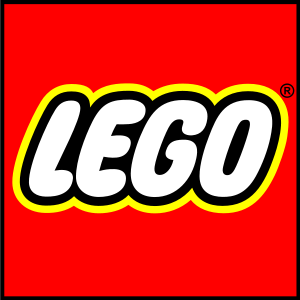
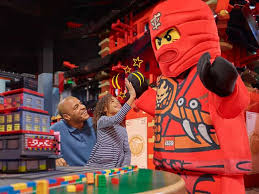
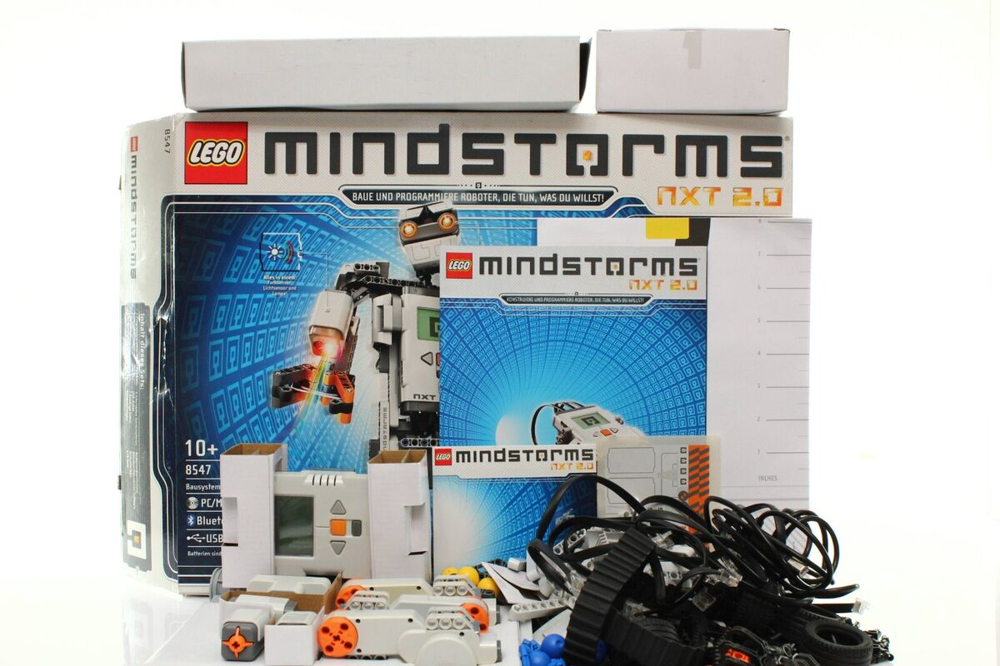

Historia de Lego
LEGO es una marca de juguetes danesa reconocida principalmente por sus bloques de plástico interconectables 1932 por Ole Kirk Christiansen, éste abrió un taller de carpintería junto a un pequeño grupo de aprendices, hasta 1949, LEGO se dedicó casi exclusivamente a producir juguetes de madera de alta calidad.
Video Juegos
LEGO empezó a hacer videojuegos en 2005 con una serie de videojuegos sobre STAR WARS. La idea era un poco extraña ya que tradicionalmente LEGO no se basaba en la idea clásica de LEGO, pero aun así tuvo mucho éxito, y hoy en día cada videojuego de LEGO es basado en personajes como Batman, Indiana Jones, Harry Potter, entre otros. LEGO también hace videojuegos principalmente para Nintendo DS o para los ordenadores con conexión a internet, juegos 100% LEGO. Es decir no de otras marcas como Lego Batman, Harry Potter, Spiderman, etc. y También se hacen serie animadas en televisión y hasta películas o cortos como publicidad para poder vender y hacer conocer más su marca.

LegoLand
Los parques LegoLand son parques temáticos de LEGO. El primer LegoLand fue abierto en Billund, Syddanmark, Dinamarca en 1968. El segundo LegoLand a abrir fue en Windsor, Inglaterra en 1996. LegoLand California fue el tercero LegoLand en abrir en el mundo,inaugurado 1999, está situado en CarlsBad, California, Estados Unidos. El cuarto es LegoLand Deutschland que fue abierto en 2005, en Günzburg. El quinto LegoLand es LegoLand Florida, en Florida, Estados Unidos. El sexto y último parque temático LegoLand es el Lego Malasia Resort inaugurado en 2012. Según algunos datos oficiales de LEGO el próximo LegoLand se abrirá en Dubai este 2016, en octubre.[1] También hay proyectos sobre futuras construcciones de parques LegoLand en India pero su construcción no comenzó, en Corea del Sur con posible apertura en 2017[2], en Japón con apertura aún desconocida[3] y en Shanghai sólo se anunciaron inversiones[4]. Nuevas formas de jugar
Lego Mindstorm
LEGO Mindstroms es una Serie de juegos LEGO que fue iniciada en 1997/1998 cuando la "revolución de los videojuegos" se creo, y se empezó a vender en el Septiembre de 1998.La idea es que varias Piezas Mindstroms se pongan en conjunto con piezas normales de LEGO, para que cuando se encienda la Pieza Mindstrom principal todo el conjunto de piezas se mueva por si solo. Esta forma de jugar fue también reconocida como educativa en el tema de mecánica y como entender que es la tecnología y la mecánica. Muchas escuelas hoy en día hacen cursos con LEGO Mindstroms. Aunque durante la "revolución de los videojuegos", antes de esta nueva y única serie, LEGO pasó por 11 años con grandes dificultades.
